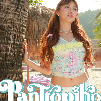

About MALOI
Her favourite colours are light pink, black and white. Her hobbies include watching k-dramas, playing guitar and ukulele. Her special talent is composing songs. She was voted as the ”Rice President” by the SHA trainees because she eats the most out of all of them. She wasnt planning on auditioning because she was focused in her academics, but since her younger sister wanted to she went along with her and got through the auditions. Her favourite SHA subject is singing. Life Motto: ”Life is short, so always choose to be happy.”
Photos
